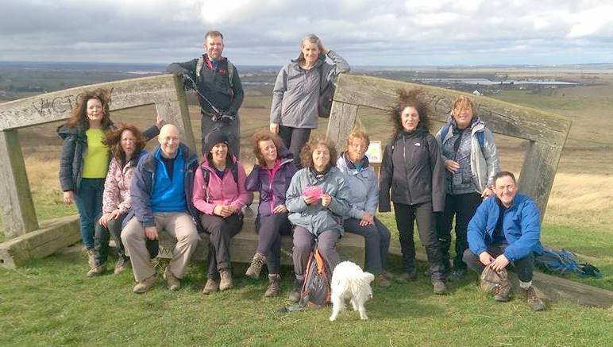
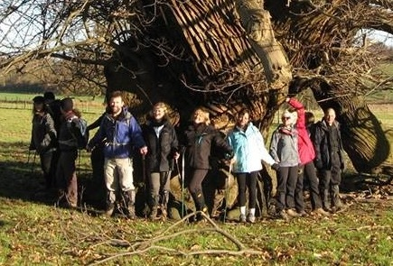
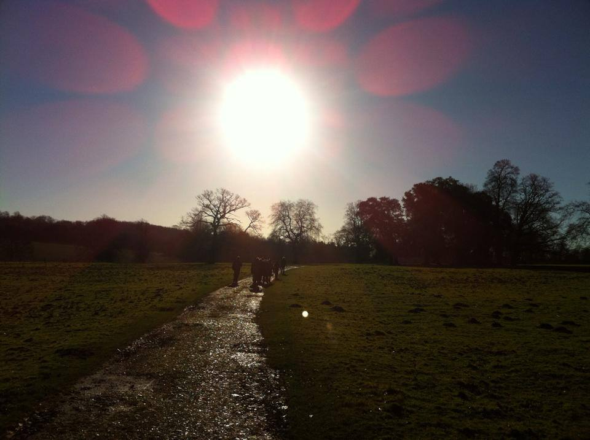

<div class="wrapper">
    <div id="page-body" class="standard" role="main">
        <div class="body-header">
            <div class="breadcrumbs">
                <ul>
                    <li><a href="#/" title="Home">Home</a></li>
                    <li class="last">Join Us</li>
                </ul>
            </div>
        </div>
        <div class="row">
            <div class="col-sm-8 auto-fit-column">
                <markdown-editor name="joinUsTop" description="join us top"></markdown-editor>
                <p></p>
                <markdown-editor name="joinUsBottom" description="join us bottom"></markdown-editor>
                <div class="check-list round">
                    <!--<markdown-editor name="memberBenefits" description="member benefits"></markdown-editor>-->
                    <h3>Member benefits</h3>
                    <ul>
                        <li><span>Four issues of <a href="https://www.ramblers.org.uk/news/walk-magazine.aspx" title="Walk magazine website" target="_blank"><em>Walk</em> magazine</a> a year (rrp: £3.40), packed with gear and book reviews, stunning photography and features by renowned writers.</span>
                        </li>
                        <li><span>Walk Britain's Great Views (rrp: £14.99) The Ramblers new walks guide, featuring hand-picked routes to Britain's top fifty viewpoints.</span></li>
                        <li><span>Full access to the <a href="http://www.ramblers.org.uk/go-walking/find-a-route.aspx">Ramblers Routes online library</a> with detailed, accurate downloadable itineraries created by other Ramblers.</span>
                        </li>
                        <li><span>Access to our extensive map library. The chance to borrow from our extensive Ordnance Survey map collection, for a very small fee.</span></li>
                        <li><span>Ramblers membership allows you walk with any Ramblers group across the country, which gives you the choice of around 500 led walks a week across England, Scotland and Wales</span></li>
                        <li><span><a href="https://www.ramblers.org.uk/get-involved/support-us/partnership-and-sponsorship-opportunities/organisations-we-work-with/cotswold-outdoor.aspx">Cotswold Outdoor</a> - Ramblers members enjoy a 15% discretionary discount, online and in store, at Cotswold Outdoor, Snow+Rock, Cycle Surgery (10% off bikes) and Runners Need - use promotional code AF-RAMBLERS-D2 (terms and conditions apply).</span></li>
                        <li><span>Rambler members can also get a 10% discretionary discount at Millets, Blacks and Rohan.</span></li>
                    </ul>
                </div>
                <div class="cta-button cta-red round">
                    <a href="https://www.ramblers.org.uk/become-a-member/join-us.aspx" title="Become a member today and get even more from walking!">Become a member today and get even more from
                        walking!</a>
                </div>
            </div>
            <div class="col-sm-4 auto-fit-column">

                <div class="cta-button cta-blue round">
                    <a href="https://www.ramblers.org.uk/Login.aspx?returnUrl=%2Fmy-account%2Frenew-your-membership.aspx" title="Renew online">Renew online</a>
                </div>

                <div class="right-col-section">

                    <div class="check-list round">
                        <h3>Why join</h3>
                        <ul>
                            <li><span>Be part of Britain's biggest walking community</span></li>
                            <li><span>Help support <a href="https://www.ramblers.org.uk/about-us/what-we-do/charitable-objectives.aspx">our charitable work</a></span></li>
                            <li class="last"><span>Opportunities to help <a href="http://www.ramblers.org.uk/about-us/how-we-are-run.aspx">run the Ramblers</a></span></li>
                        </ul>
                    </div>
                    <br>
                    
                </div>

                <div class="right-col-section">
                    <div class="check-list round">
                        <h3>Member offers</h3>
                        <ul>
                            <li><span>Holiday offers from <a href="https://www.ramblers.org.uk/news/news/2014/march/walking-holiday-offers-from-hf-holidays.aspx">HF Holidays</a></span>
                            </li>
                            <li><span>Discounts and offers on <a href="https://www.ramblers.org.uk/my-account/discounts-and-offers.aspx">Ramblers</a></span>
                            </li>
                        </ul>
                    </div>
                </div>
                <br>
                
            </div>
        </div>
        <div class="row">
            <div class="col-sm-12 body-content">
                <h3>How to join EKWG</h3>
                <ul>
                    <li>You can join online via the Ramblers website by clicking the link above.</li>
                    <li>Enter your "Ramblers Group" as "East Kent Walking Group" (KT50), and you'll be made a member of EKWG.</li>
                    <li>If you join online, it sometimes takes a couple of weeks for us to receive your details, so
                        please send your contact details to our <contact-us ng-if="contactUs.ready()" role="membership" text="Membership Administrator"></contact-us> so that we can add you to our mailing list as soon as possible!
                    </li>
                </ul>
                <br/>
                <h3>How to transfer to EKWG</h3>
                <ul>
                    <li>If you’re already a member of another Ramblers group you can transfer your group membership to EKWG by clicking the link above.</li>
                    <li>Enter your "Ramblers Group" as "East Kent Walking Group" (KT50), and you'll be made a member of EKWG. Or contact our <contact-us ng-if="contactUs.ready()" role="membership" text="Membership Administrator"></contact-us> and we’ll arrange the transfer for you.
                    </li>
                </ul>
            </div>
        </div>
    </div>
</div>